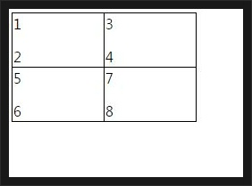
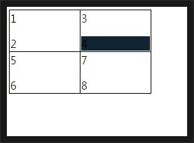
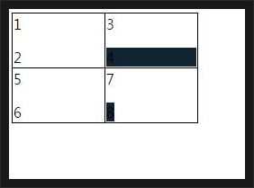
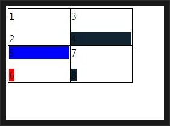

[CSS] 疑似クラス - nth-child, nth-of-type, nth-last-child, nth-last-of-type
こんにちは。明月です。
CSSの擬似クラスは役12個ごろありますが、そのなかで「nth-child」、「nth-of-type」、「nth-last-child」、「nth-last-of-type」に関して調べてみました。
<HTML>
<HEAD>
<script src="jquery-1.12.1.min.js" language="javascript"></script>
<style>
table{
border-top:1px solid #000;
border-left:1px solid #000;
padding:0px;
border-spacing:0px;
}
th,td{
border-right:1px solid #000;
border-bottom:1px solid #000;
width:100px;
}
</style>
</HEAD>
<BODY>
<table>
<tbody>
<tr>
<td>
<p>1</p>
<p>2</p>
</td>
<td>
<p>3</p>
<p>4</p>
</td>
</tr>
<tr>
<td>
<p>5</p>
<span>6</span>
</td>
<td>
<p>7</p>
<span>8</span>
</td>
</tr>
</tbody>
</table>
</BODY>
</HTML>

先、nth-childやnth-last-childは要素のn番目を選択することです。
offsetタイプで数えることではないので初めの番後は「1」から始まります。
(プログラムで配列などを数える時にoffset概念で「0」から数えますが、CSSの場合は人間が数えるみたいに「1」から始まります。)
上の例のテーブルで「4」を選択するようには「tbody > tr:nth-child(1) > td:nth-child(2) > p:nth-child(2)」で選択すると選択されます。
tbody > tr:nth-child(1) > td:nth-child(2) > p:nth-child(2) {
background-color: #123
}

でも、nth-childで「8」番を選択しようと思うと少し迷ってしまいます。なぜなら、8番のタグは「p」タグではなく「span」タグなのです。
簡単に考えるとその「td」の中である「span」タグは一つだけなので「tbody > tr:nth-child(2) > td:nth-child(2) > span:nth-child(1)」で選択するとできそうです。
でも、実際はできないですね。
理由はnth-childの選択子はタグの要素に関係しずに、選択するからです。つまり、span:nth-child(1)の場合はtr:nth-child(2)の派生タグでspanタグがないので、何も選択されない状況になります。
纏めて、上のspanタグを選択したいなら「tbody>tr:nth-child(2)>td:nth-child(2)>span:nth-child(2)」の選択子で選択しなければならないです。
この状況になると何か迷いますね。単純な構造ならすぐ気づきますが、複雑なタグ構造なら迷ういますね。
それでタグ別で順番を選択できる選択子はnth-of-typeです。このことは同じレベルの同じタグ要素のn番目を選択するのができます。
tbody > tr:nth-child(2) > td:nth-child(2) > span:nth-of-type(1){
background-color:#123;
}

その後は「nth-last-child」と「nth-last-of-type」の選択子です。この選択子はネーミングで気づきますが、逆に選択する選択子です。
今回は「6」と「5」を選択しましょう。
tbody > tr:nth-child(2) > td:nth-child(1) > span:nth-last-child(1){
background-color:red;
}
tbody > tr:nth-child(2) > td:nth-child(1) > p:nth-last-of-type(1){
background-color:blue;
}

上のタグを見れば、逆の順番で最初が赤色でpタグで逆に最初タグが青色になります。
つまり、6番が赤色で5番が青色になります。
- [CSS] アニメーション (animation)2019/12/20 20:51:38
- [CSS] トランスフォーム (transform)2019/12/19 13:00:26
- [CSS] トランジション(transition)2019/12/18 20:33:57
- [CSS] Columnスタイル2019/12/17 19:52:56
- [CSS] 整列スタイル (float)2019/12/17 00:08:54
- [CSS] 位置(position),表示(display)スタイル2019/12/13 20:08:50
- [CSS] border(枠)、余白スタイル - border, margin, padding2019/12/12 20:16:43
- [CSS] 文字スタイル2019/12/11 21:13:22
- [CSS] その他の疑似選択子 - link, visited, target, enabled, disabled, not, active, hover, focus2019/12/10 07:31:28
- [CSS] 疑似要素選択子 - fist-line, first-letter, before, after2019/12/09 07:28:27
- [CSS] 属性選択子2019/12/06 07:27:36
- [CSS] 疑似クラス - only-child, only-of-type, empty, empty, root2019/12/05 07:29:15
- [CSS] 疑似クラス - first-child, last-child, first-of-type, last-of-type2019/12/04 07:28:37
- [CSS] 疑似クラス - nth-child, nth-of-type, nth-last-child, nth-last-of-type2019/12/03 07:21:20
- [CSS] 属性選択子2019/12/02 07:32:37
- [CSS] アニメーション (animation)2019/12/20 20:51:38
- [CSS] トランスフォーム (transform)2019/12/19 13:00:26
- [CSS] トランジション(transition)2019/12/18 20:33:57
- [CSS] Columnスタイル2019/12/17 19:52:56
- [CSS] 整列スタイル (float)2019/12/17 00:08:54
- [CSS] 位置(position),表示(display)スタイル2019/12/13 20:08:50
- [CSS] border(枠)、余白スタイル - border, margin, padding2019/12/12 20:16:43
- [CSS] 文字スタイル2019/12/11 21:13:22
- [CSS] その他の疑似選択子 - link, visited, target, enabled, disabled, not, active, hover, focus2019/12/10 07:31:28
- [CSS] 疑似要素選択子 - fist-line, first-letter, before, after2019/12/09 07:28:27
- [CSS] 属性選択子2019/12/06 07:27:36
- [CSS] 疑似クラス - only-child, only-of-type, empty, empty, root2019/12/05 07:29:15
- [CSS] 疑似クラス - first-child, last-child, first-of-type, last-of-type2019/12/04 07:28:37
- [CSS] 疑似クラス - nth-child, nth-of-type, nth-last-child, nth-last-of-type2019/12/03 07:21:20
- [CSS] 属性選択子2019/12/02 07:32:37